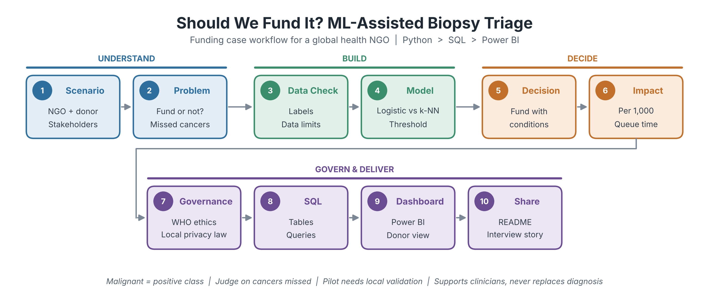

Health decision support · Python, SQL and Power BI
Should we fund it? A data-driven case for ML-assisted biopsy triage
Bottom line: on this public dataset, a logistic regression model with a deliberately low threshold of 0.09 put 63 of 64 cancers at the front of the review queue. I recommend the donor fund a 12-month pilot with conditions: local re-validation first, a pathologist signs off every case, and an independent review at month six. The model reorders the queue. It never replaces a diagnosis.

1. The scenario and the decision
CareBridge Health, a fictional global health NGO, is asking a donor to fund a pilot in hospital pathology labs where specialists are scarce. When there are not enough pathologists, biopsies wait in long queues, and every week of delay matters for a patient with cancer. The proposed tool would rank incoming biopsies so the ones most likely to be malignant are read first.
The donor's decision: fund the pilot, fund it with conditions, or decline.
What ML means here: a statistical model that learns from past biopsy results and ranks new cases so pathologists review the most likely cancers first. A pathologist makes every final decision.
| Stakeholder | What they need from this decision |
|---|---|
| Donor | Evidence of patient impact, clear risks and conditions |
| NGO program lead | A pilot that is feasible inside real lab workflows |
| Pathologists | Accuracy they can trust, explanations, no flood of false alarms |
| Patients | No missed cancers, faster answers |
| Ministry of health and data protection officer | Privacy compliance, ethics approval, clear accountability |
2. The problem, defined properly
The real question is not "which model is most accurate?" It is: does a model reduce the risk of delayed cancer diagnoses enough to justify a pilot, and under what conditions?
Missed cancer (false negative)
A malignant biopsy sits in the slow queue. Diagnosis and treatment are delayed. This is the error that matters most.
False alarm (false positive)
A benign biopsy jumps the queue. It costs some specialist time, but the case is still reviewed and correctly diagnosed.
So I judged both models on malignant recall (cancers caught), with specificity as the second test. Overall accuracy was not the target: a model can be 95% accurate and still miss too many cancers.
3. Data and validation
The data is the Breast Cancer Wisconsin (Diagnostic) dataset: 569 biopsies, 30 measurements of cell nuclei taken from digitized images of fine needle aspirates. 212 are malignant (37.3%). There are no missing values.
Label check first. In this dataset 0 = malignant and 1 = benign. Reading it the other way round silently swaps sensitivity and specificity and overstates how many cancers a model catches. I found exactly this error in a reference solution, so the notebook now asserts the label meaning and recodes malignant as the positive class before any modelling.
The data comes from one clinic in Wisconsin, USA, in the early 1990s. It is used here to prove the method, not to claim the model works on patients elsewhere.
4. Two models, one decision rule
Both models used the same stratified 70/30 split, scaling inside a pipeline (fitted on training data only), and 5-fold cross-validation repeated 10 times, selecting on malignant recall. Then I tuned each model's decision threshold on out-of-fold training predictions: the threshold with the highest specificity that still reached 98% recall. The test set was used once, at the end.
| Model and rule | Threshold | Caught | Missed | False alarms | Recall | Specificity | Priority share |
|---|---|---|---|---|---|---|---|
| k-NN (k=3), default | 0.50 | 57 | 7 | 0 | 89.1% | 100.0% | 33.3% |
| k-NN (k=3), tuned | 0.07 | 62 | 2 | 5 | 96.9% | 95.3% | 39.2% |
| Logistic regression, default | 0.50 | 60 | 4 | 1 | 93.8% | 99.1% | 35.7% |
| Logistic regression, tuned (recommended) | 0.09 | 63 | 1 | 7 | 98.4% | 93.5% | 40.9% |
A finding that favours logistic regression: with k=3, k-NN can only output four probabilities (0, 0.33, 0.67 and 1). That coarseness meant it could not reach the 98% recall target in cross-validation (best: 97.97%). Logistic regression gives continuous probabilities, so the threshold can be set precisely.
5. Errors and explainability
Tuned logistic regression missed one cancer (biopsy 73, predicted probability 0.062, just under the 0.09 threshold). Tuned k-NN missed the same case plus one more. A case both models miss is a reminder of why a pathologist must read every biopsy.
Logistic regression also explains itself. On standardized features, the strongest signals were worst texture (+1.37), radius error (+1.21) and worst symmetry (+1.08). Positive weights push a case toward priority; compactness error (−0.91) pushes the other way. These are associations, not causes, but they give pathologists something to check. k-NN offers no comparable explanation.
6. Impact: the queue is reordered, not reduced
Every biopsy is still read by a pathologist, so the tool does not cut workload. Its value is time: likely cancers are read first. Using the recommended model's test-set recall and specificity, per 1,000 biopsies:
| Prevalence | Cancers | In priority queue | In standard queue | False alarms | Priority cases | Days to clear priority | Days to clear all |
|---|---|---|---|---|---|---|---|
| 15% | 150 | 147 | 3 | 55 | 202 | 10.1 | 50.0 |
| 25% | 250 | 246 | 4 | 49 | 295 | 14.8 | 50.0 |
| 37% | 370 | 364 | 6 | 41 | 405 | 20.2 | 50.0 |
At 25% prevalence, 246 of 250 cancers would be read within about 15 days instead of being spread across a 50-day queue.
7. Governance and ethics
- Data and licence: UCI Machine Learning Repository, CC BY 4.0 (attribution required). Public and de-identified.
- Generalizability: the biggest risk. Patients, equipment and lab practices differ from a 1990s US clinic. The pilot exists to test this.
- Privacy: no personal data is used here. A real pilot would need to comply with host-country law (for example, Nigeria's Data Protection Act 2023) and obtain hospital ethics approval.
- Ethics: draws on the principles in WHO's 2021 guidance Ethics and governance of artificial intelligence for health: human oversight, transparency and accountability.
- Fairness: the dataset has no demographic fields, so performance across groups cannot be tested. The pilot must collect what is needed to check it.
- Oversight: named model owner, monthly review of missed cases, version control, and an audit trail of every prediction (the
model_runsandpredictionstables).
| Model card | |
|---|---|
| Purpose | Reorder the biopsy review queue so likely cancers are read first |
| Intended users | Pathologists and laboratory managers |
| Model | Logistic regression (C = 1.0), threshold 0.09 |
| Test-set results | Recall 98.4%, specificity 93.5%, 1 cancer missed, 7 false alarms |
| Not for | Diagnosis, or any decision without pathologist review |
| Owner | Mercy Mamkon Oyeleke, Data Analytics & Business Intelligence Consultant |
| Review | Six months after deployment |
8. Recommendation: fund with conditions
- Local re-validation first. Re-calibrate the threshold on de-identified historical samples from partner clinics, with the sample size set by a statistician, before any patient-facing use.
- A pathologist signs off 100% of cases. The model orders the queue; it does not diagnose.
- Independent review at month six, with a tolerance rule. No automatic stop on a single miss. Pause for review if the missed-cancer rate in the standard queue exceeds the rate validated locally, and review every miss with the clinical lead.
9. What I checked and corrected
Reviewing the first draft line by line against the code output caught real problems. Fixing them is part of the work:
- An early draft reported 94.4% specificity; the code produced a different figure. Every number in the text now comes from a variable, and a final "Numbers Check" cell asserts them.
- The draft claimed a "50% workload reduction" while also requiring pathologists to read every case. Both cannot be true, so I rebuilt the impact around queue reordering.
- The k-NN threshold search silently fell back to 0.50 when it could not reach the target. It now warns and records that the target was not met.
- The threshold loop was overwriting the final model during cross-validation, which affected the coefficient chart. Fixed by cloning the model in each fold.
- The licence was described as "public domain". It is CC BY 4.0, which requires attribution.
10. Limitations
- Small sample: 569 biopsies, 171 in the test set. One case moves recall by about 1.6 points.
- One US clinic, early 1990s; image-derived features only.
- No demographic fields, so fairness cannot be tested.
- Not clinically validated. Not for diagnosis.
11. Files and tools
| File | What it is |
|---|---|
| notebook/ml_assisted_biopsy_triage.ipynb | Full analysis in 16 sections, each step explained, ending with an automated numbers check |
| sql/schema.sql · sql/queries.sql | SQLite schema (4 tables) and five operational queries |
| data/ | CSV exports: biopsies, predictions, model runs, queue scenarios |
| powerbi/DAX_measures.dax · Power BI build guide | Data model, DAX measures, What-If parameters and a five-page layout |
| dashboard/ | Browser dashboard: move the threshold and watch cancers missed and false alarms change |
Acknowledgements
This case study applies what I learned in the Certificate in Data Analytics, Big Data and Predictive Analytics at Toronto Metropolitan University, The Chang School of Continuing Education, in particular CMTH 642 (classification vs clustering, logistic regression and k-nearest neighbours). Thank you to Dr. Ceni Babaoglu for the course labs this work builds on.
The scenario, funding framing, threshold and queue analysis, governance design, SQL layer and Power BI build are my own extension of that coursework onto a real-world question.